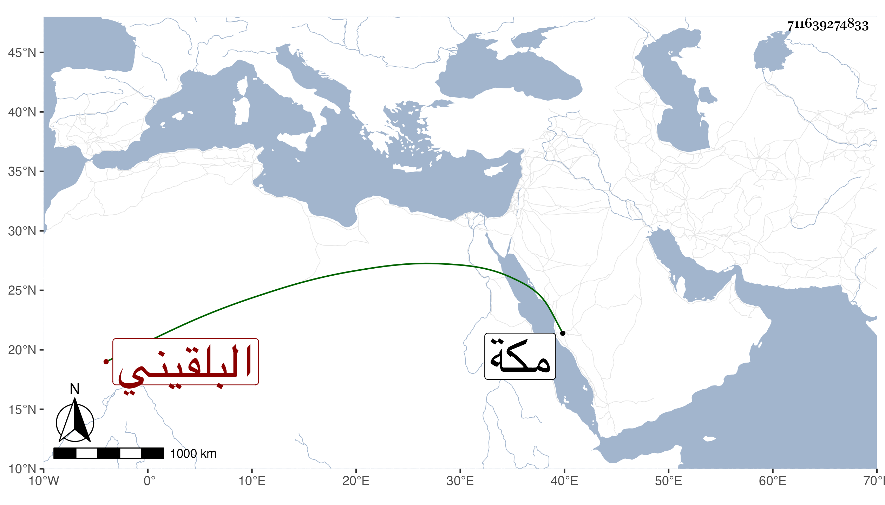

0902Sakhawi.DawLamic.ITO20230111-ara1.EIS1600.711639274833
Biography ID: 711639274833
42
ألف ابنة العلاء علي بن التاج محمد بن القاضي جلال الدين عبد الرحمن البلقيني شقيقة عبد الرحمن ومحمد الماضيين ، وأمهم حبشية فتاة أبيهم . ماتت في المحرم سنة ثمان وسبعين وصلى عليها بجامع الحاكم ثم دفنت بمدرستهم وكان قد تزوجها الشريف السراج عبد اللطيف قاضي الحنابلة بمكة وأقامت بها تحته واستولدها ومات عنها فقدمت على أبيها وتزوجت بمن لا وجاهة له وماتت تحته وقد زاحمت الخمسين رحمها الله وعفا عنها .
